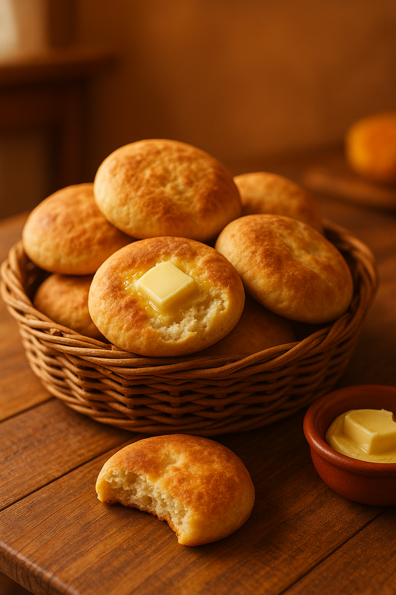

Pan Amasado

Descripción: Clásico pan chileno, ideal para acompañar el desayuno o la once, recién salido del horno y con un toque de mantequilla.
Ingredientes:
- 1 kg de harina
- 2 cucharaditas de sal
- 1 cucharada de azúcar
- 2 cucharadas de manteca o aceite
- 30g de levadura fresca
- 1 taza de agua tibia
Preparación:
- Disolver la levadura en el agua tibia con azúcar.
- Mezclar con la harina, la sal y la manteca.
- Amasar hasta obtener una masa lisa.
- Reposar 30 minutos. Formar pancitos y pinchar con tenedor.
- Hornear a 200°C por 20 minutos o hasta dorar.
Información Nutricional (por unidad aprox):
- Calorías: 170
- Carbohidratos: 28g
- Grasas: 4g
- Proteínas: 4g
Tiempo estimado: 1 hora
Dificultad: Media